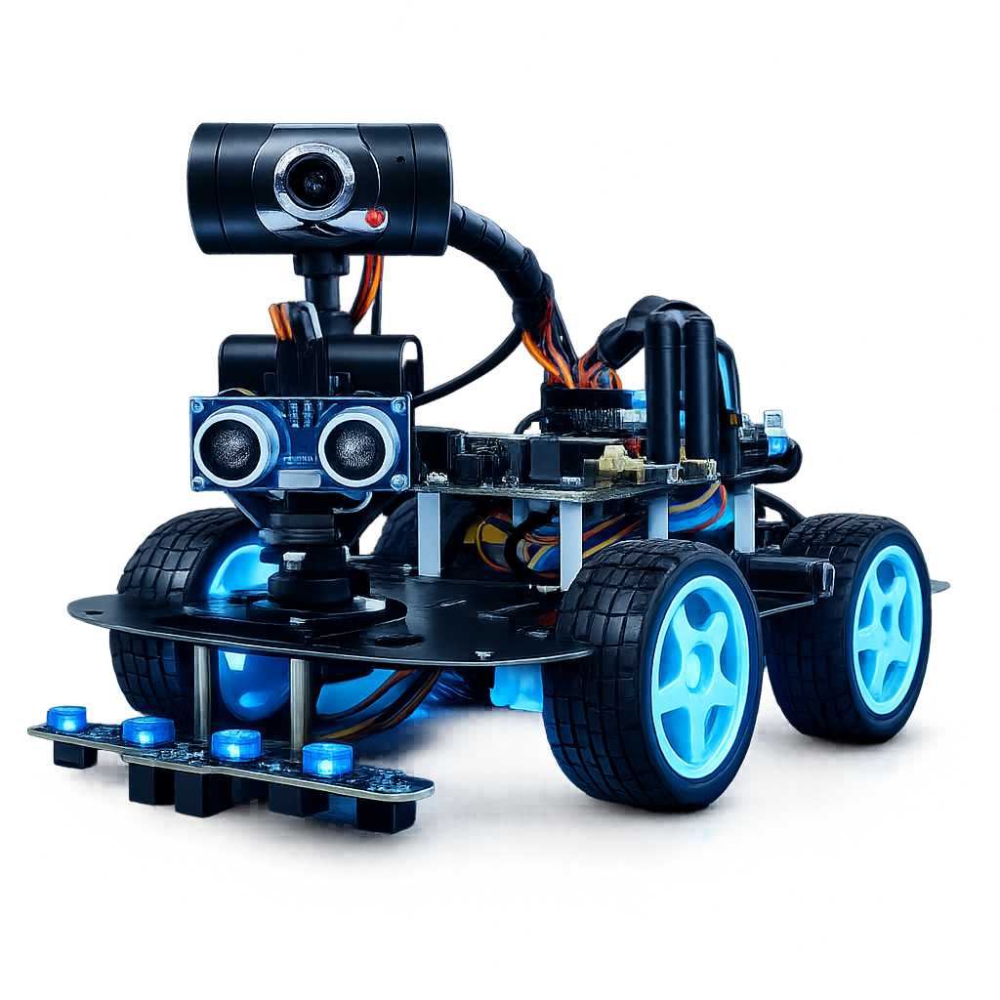
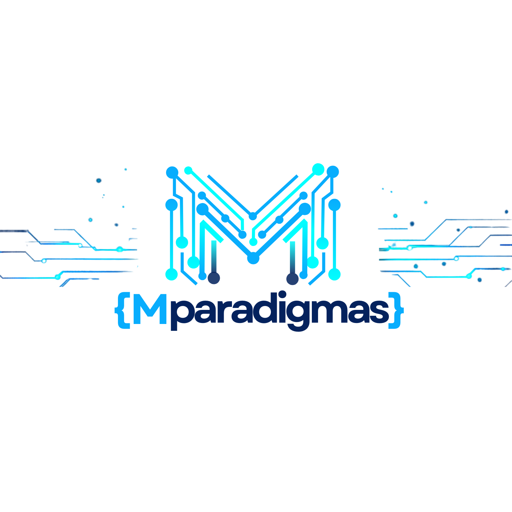
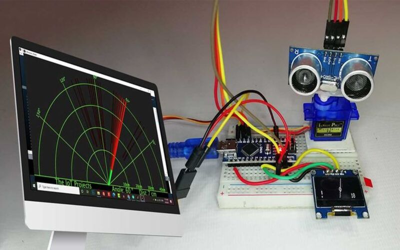
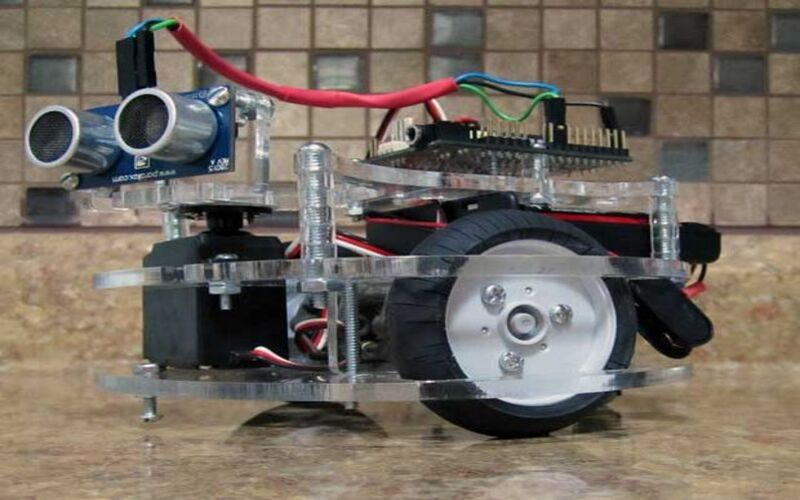
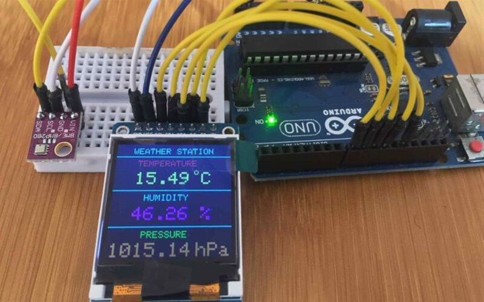
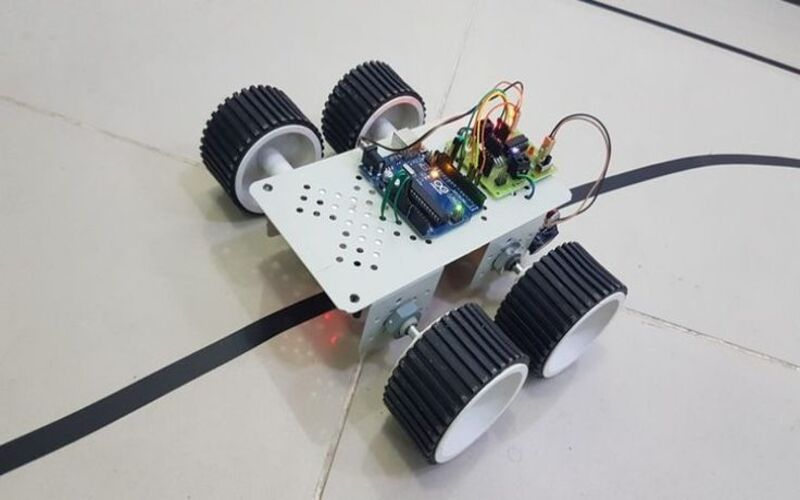

Aprende robótica, programación y electrónica construyendo proyectos reales desde cero.

Mparadigmas es una academia tecnológica que forma estudiantes capaces de comprender y construir tecnología real. Trabajamos con robótica, programación y electrónica aplicada bajo la metodología STEAM. Enseñamos desde los fundamentos utilizando electrónica discreta junto a plataformas tendencias en el campo de la robotica educativa.
Creemos que la educación tecnológica debe ser práctica, creativa y orientada a resolver problemas del mundo real. Por eso nuestros programas están diseñados para desarrollar pensamiento tecnológico, habilidades de ingeniería y mentalidad innovadora.

Formar innovadores tecnológicos capaces de construir soluciones reales mediante robótica, programación y electrónica aplicada.
Crear una comunidad de creadores de tecnología que desarrollen proyectos innovadores y lideren el futuro de la ingeniería.
Innovación, aprendizaje práctico, pensamiento crítico y pasión por construir tecnología que transforme el mundo.
Co-fundador
Profesional con formación en el área tecnológica(Informatica), especializado en el desarrollo de soluciones digitales, programación y proyectos de innovación educativa. Con experiencia en la enseñanza de herramientas tecnológicas, robótica y desarrollo web, orientado a la creación de soluciones prácticas que integren tecnología, creatividad y aprendizaje.
Foto Antonio García
Ingeniero en Sistemas — fundador
Ingeniero en sistemas con amplio conocimiento en electrónica y una gran pasión por la tecnología aplicada a la educación. A lo largo de su trayectoria ha impulsado el aprendizaje de la robótica y la innovación tecnológica en estudiantes, guiando el desarrollo de proyectos donde se integran programación, sensores y sistemas electrónicos para crear soluciones reales.
Construcción de robots con Arduino y sensores reales.
Desarrollo de software aplicado a proyectos tecnológicos.
Comprender y crear circuitos electrónicos funcionales.
Aprendizaje basado en la creación de proyectos reales.

Sistema de detección usando sensor ultrasónico.

Vehículo autónomo con sensores inteligentes.

Sistema de medición ambiental con sensores.

Vehículo autónomo que sigue rutas programadas.
Únete a la nueva generación de creadores tecnológicos.